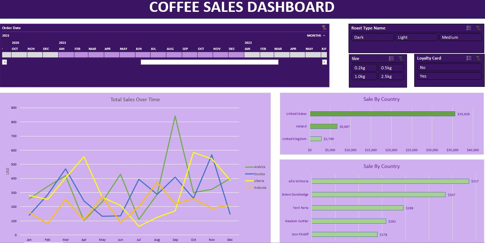

Summary
I realized the importance of data analytics during university, as it enables data-driven decisions over emotional ones for more accurate conclusions. I have worked on several data analysis projects, both independently and by following tutorials. Above is a dashboard I created to analyze coffee sales for a café.
Difficulties Faced
The main difficulty is to learn and understand how different functions in Excel such as Pivot Tables, VBA, Data Validation, Formulas can aid in Data Analysis. After using these functions regularly, the next difficulty is to construct the dashboard such that it is visually appealing while being easy to navigate.
Skills Obtained
PIVOT TABLES
VBA
DATA VALIDATION
EXCEL FORMULATION